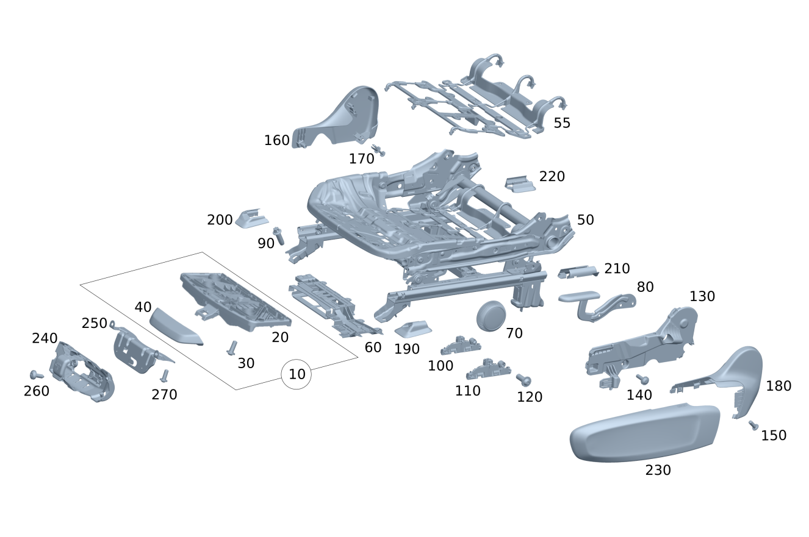

| № | Артикул | Название | Кол. | Примечание | Ограничение |
|---|---|---|---|---|---|
| 10 | A 174 910 00 00 | Подушка сиденья водителя | 1 | Регулировка длины подушки передн.сиденья слева | 275/278 |
| 10 | A 174 910 00 00 | Подушка сиденья водителя | 1 | Регулировка длины подушки передн.сиденья справа | 275/278 |
| 20 | A 000 910 48 14 | - Блокировка спинки сиденья (BACKREST LOCKING FUNCTION) | 1 | Направляющая планка Регулировка длины подушки сиденья Переднее сиденье слева | 275/278 |
| 20 | A 000 910 48 14 | - Блокировка спинки сиденья (BACKREST LOCKING FUNCTION) | 1 | Направляющая планка Регулировка длины подушки сиденья Переднее сиденье справа | 275/278 |
| 30 | N 000000 002349 | - Винт с 6-гр. глвк (HEXALOBULAR SCREW) | 2 | Винт Направляющая планка Регулировка длины подушки сиденья Переднее сиденье слева; 6X16 | 275/278 |
| 30 | N 000000 002349 | - Винт с 6-гр. глвк (HEXALOBULAR SCREW) | 2 | Винт Направляющая планка Регулировку длины подушки сиденья Переднее сиденье справа; 6X16 | 275/278 |
| 40 | A 000 910 13 16 | - Регулировка пол.сиденья | 1 | Регулировочный рычаг Регулировка длины подушки сиденья Переднее сиденье слева | 275/278 |
| 40 | A 000 910 13 16 | - Регулировка пол.сиденья | 1 | Регулировочный рычаг Регулировка длины подушки сиденья Переднее сиденье справа | 275/278 |
| 50 | A 000 910 87 13 | Регулировка сид. по выс. (SEAT HEIGHT ADJUSTMENT) | 1 | Механизм регулировки положения переднего сиденья слева Рулевое управление: Влево | |
| 50 | A 000 910 89 13 | Регулировка сид. по выс. (SEAT HEIGHT ADJUSTMENT) | 1 | Механизм регулировки положения переднего сиденья слева Рулевое управление: Вправо | |
| 50 | A 000 910 27 14 | Регулировка сид. по выс. (SEAT HEIGHT ADJUSTMENT) | 1 | Механизм регулировки положения переднего сиденья слева | 275/278 |
| 50 | A 000 910 36 17 | Регулировка сид. по выс. | 1 | Механизм регулировки положения переднего сиденья слева Рулевое управление: Влево | (807+057/808/29X) |
| 50 | A 000 910 36 17 | Регулировка сид. по выс. | 1 | Механизм регулировки положения переднего сиденья слева Рулевое управление: Влево | |
| 50 | A 000 910 38 17 | Регулировка сид. по выс. | 1 | Механизм регулировки положения переднего сиденья слева Рулевое управление: Вправо | |
| 50 | A 000 910 92 13 | Регулировка сид. по выс. (SEAT HEIGHT ADJUSTMENT) | 1 | Механизм регулировки положения переднего сиденья справа Рулевое управление: Вправо | |
| 50 | A 000 910 94 13 | Регулировка сид. по выс. (SEAT HEIGHT ADJUSTMENT) | 1 | Механизм регулировки положения переднего сиденья справа Рулевое управление: Влево | |
| 50 | A 000 910 31 14 | Регулировка сид. по выс. (SEAT HEIGHT ADJUSTMENT) | 1 | Механизм регулировки положения переднего сиденья справа | 275/278 |
| 50 | A 000 910 37 17 | Регулировка сид. по выс. | 1 | Механизм регулировки положения переднего сиденья справа Рулевое управление: Влево | (807+057/808/29X) |
| 50 | A 000 910 37 17 | Регулировка сид. по выс. | 1 | Механизм регулировки положения переднего сиденья справа Рулевое управление: Влево | |
| 50 | A 000 910 39 17 | Регулировка сид. по выс. | 1 | Механизм регулировки положения переднего сиденья справа Рулевое управление: Вправо | |
| 55 | A 000 913 26 00 | - Упругий мат | 1 | Пружинный мат (левый) | |
| 55 | A 000 913 26 00 | - Упругий мат | 1 | Пружинный мат (правый) | |
| 60 | A 000 919 33 00 | Держатель (HOLDER) | 1 | Держатель блока/устройства управления регулировки переднего сиденья слева | 275/278 |
| 60 | A 000 919 32 00 | Держатель (HOLDER) | 1 | Держатель блока/устройства управления регулировки переднего сиденья справа | 275/278 |
| 70 | A 174 918 01 00 | Маховичок | 1 | Маховичок регулировки наклона сиденья \- переднее сиденье слева Рулевое управление: Влево | |
| 70 | A 174 918 01 00 | Маховичок | 1 | Маховичок регулировки наклона сиденья \- переднее сиденье справа Рулевое управление: Вправо | |
| 80 | A 174 910 11 01 | Рычаг регулир. по высоте | 1 | Регулировочный рычаг Регулировка положения сиденья по высоте Переднее сиденье слева | |
| 80 | A 174 910 12 01 | Рычаг регулир. по высоте (LEVER, HEIGHT ADJUSTMENT) | 1 | Регулировочный рычаг Регулировка положения сиденья по высоте Переднее сиденье справа | |
| 90 | A 000 990 43 35 | Самонарезающий винт (SELF-TAPPING SCREW) | 4 | Болт механизма регулировки положения переднего левого сиденья | |
| 90 | A 000 990 43 35 | Самонарезающий винт (SELF-TAPPING SCREW) | 4 | Болт механизма регулировки положения переднего правого сиденья | |
| 100 | A 174 910 23 03 | Фиксатор | 1 | Датчик положения переднего сиденья слева Рулевое управление: Влево | 5S4 |
| 100 | A 174 910 23 03 | Фиксатор | 1 | Датчик положения переднего сиденья слева Рулевое управление: Вправо | 0S9 |
| 100 | A 174 910 23 03 | Фиксатор | 1 | Датчик положения переднего сиденья справа Рулевое управление: Вправо | 5S4+275 |
| 110 | A 174 905 98 02 | - Датчик Холла (HALL SENSOR) | 1 | Датчик положения переднего сиденья слева Рулевое управление: Влево | 5S4 |
| 110 | A 174 905 98 02 | - Датчик Холла (HALL SENSOR) | 1 | Датчик положения переднего сиденья слева Рулевое управление: Вправо | 0S9 |
| 110 | A 244 905 90 00 | Датчик Холла (HALL SENSOR) | 1 | Датчик положения переднего сиденья слева Рулевое управление: Вправо | (S07/S07+5S4)+(807+057/808/29X) |
| 110 | A 244 905 90 00 | - Датчик Холла (HALL SENSOR) | 1 | Датчик положения переднего сиденья слева Рулевое управление: Вправо | (S07/S07+5S4) |
| 110 | A 174 905 97 02 | Датчик Холла (HALL SENSOR) | 1 | Датчик положения переднего сиденья справа Рулевое управление: Влево | 5S4+(275/278) |
| 110 | A 174 905 97 02 | Датчик Холла (HALL SENSOR) | 1 | Датчик положения переднего сиденья справа Рулевое управление: Влево | 0S9 |
| 110 | A 174 905 97 02 | Датчик Холла (HALL SENSOR) | 1 | Датчик положения переднего сиденья справа Рулевое управление: Вправо | 5S4 |
| 110 | A 174 905 98 02 | - Датчик Холла (HALL SENSOR) | 1 | Датчик положения переднего сиденья справа Рулевое управление: Вправо | 5S4+275 |
| 110 | A 244 905 91 00 | Датчик Холла (HALL SENSOR) | 1 | Датчик положения переднего сиденья справа Рулевое управление: Влево | (S07/S07+5S4)+(807+057/808/29X) |
| 110 | A 244 905 91 00 | - Датчик Холла (HALL SENSOR) | 1 | Датчик положения переднего сиденья справа Рулевое управление: Влево | (S07/S07+5S4) |
| 120 | N 000000 002349 | - Винт с 6-гр. глвк (HEXALOBULAR SCREW) | 1 | Датчик Холла к каркасу левого сиденья; 6X16 | 0S9/5S4 |
| 120 | N 000000 002349 | - Винт с 6-гр. глвк (HEXALOBULAR SCREW) | 1 | Датчик Холла к каркасу правого сиденья; 6X16 | 0S9/5S4 |
| 130 | A 174 919 11 00 | Крепежная пластина (MOUNTING PLATE) | 1 | Усиливающий элемент облицовки сбоку снаружи переднего сиденья слева | |
| 130 | A 174 919 41 00 | Крепежная пластина (MOUNTING PLATE) | 1 | Усиливающий элемент облицовки сбоку снаружи переднего сиденья слева | |
| 130 | A 174 911 01 00 | Крепежная пластина (MOUNTING PLATE) | 1 | Усиливающий элемент облицовки сбоку снаружи переднего сиденья слева | 275 |
| 130 | A 174 911 07 00 | Крепежная пластина (MOUNTING PLATE) | 1 | Усиливающий элемент облицовки сбоку снаружи переднего сиденья слева | 275 |
| 130 | A 174 919 12 00 | Крепежная пластина (MOUNTING PLATE) | 1 | Усиливающий элемент облицовки сбоку снаружи переднего сиденья справа | |
| 130 | A 174 919 42 00 | Крепежная пластина (MOUNTING PLATE) | 1 | Усиливающий элемент облицовки сбоку снаружи переднего сиденья справа | |
| 130 | A 174 911 02 00 | Крепежная пластина (MOUNTING PLATE) | 1 | Усиливающий элемент облицовки сбоку снаружи переднего сиденья справа | 275 |
| 130 | A 174 911 08 00 | Крепежная пластина (MOUNTING PLATE) | 1 | Усиливающий элемент облицовки сбоку снаружи переднего сиденья справа | 275 |
| 140 | A 174 990 05 00 | Винт с сфероцил. головкой (PAN HEAD SCREW) | 1 | Болт Усиливающий элемент облицовки сбоку снаружи переднего сиденья слева; M5X16,5 | |
| 140 | A 174 990 05 00 | Винт с сфероцил. головкой (PAN HEAD SCREW) | 1 | Болт Усиливающий элемент облицовки сбоку снаружи переднего сиденья справа; M5X16,5 | |
| 150 | N 000000 002349 | Винт с 6-гр. глвк (HEXALOBULAR SCREW) | 2 | Болт крышки механизма регулировки спинки переднего левого сиденья; 6X16 | |
| 150 | N 000000 002349 | Винт с 6-гр. глвк (HEXALOBULAR SCREW) | 1 | Болт крышки механизма регулировки спинки переднего левого сиденья; 6X16 | |
| 150 | N 000000 002349 | Винт с 6-гр. глвк (HEXALOBULAR SCREW) | 2 | Болт крышки механизма регулировки спинки переднего правого сиденья; 6X16 | |
| 150 | N 000000 002349 | Винт с 6-гр. глвк (HEXALOBULAR SCREW) | 1 | Болт крышки механизма регулировки спинки переднего правого сиденья; 6X16 | |
| 160 | A 174 919 13 00 | Крышка регулир. по высоте | 1 | Накладка Замок ремня безопасности Регулировка спинки сиденья Переднее сиденье слева внутри | |
| 160 | A 174 919 15 00 | Крышка регулир. по высоте | 1 | Накладка Замок ремня безопасности Регулировка спинки сиденья Переднее сиденье слева внутри Рулевое управление: Влево | 325 |
| 160 | A 174 919 14 00 | Крышка регулир. по высоте | 1 | Накладка Замок ремня безопасности, Регулировка спинки сиденья Переднее сиденье справа внутри | |
| 160 | A 174 919 16 00 | Крышка регулир. по высоте | 1 | Накладка Замок ремня безопасности, Регулировка спинки сиденья Переднее сиденье справа внутри Рулевое управление: Вправо | 325 |
| 170 | A 000 991 41 40 | Распорная заклепка (EXPANSION RIVET) | 1 | Крепление кожуха каркаса сиденья слева внутри | |
| 170 | A 000 991 41 40 | Распорная заклепка (EXPANSION RIVET) | 1 | Крепление кожуха каркаса сиденья справа внутри | |
| 180 | A 174 919 09 00 | Крышка регулир. по высоте | 1 | Накладка сбоку снаружи Переднее сиденье слева Рулевое управление: Влево | |
| 180 | A 174 919 45 00 | Крышка регулир. по высоте | 1 | Накладка сбоку снаружи Переднее сиденье слева Рулевое управление: Влево | |
| 180 | A 174 919 19 00 | Крышка регулир. по высоте | 1 | Накладка сбоку снаружи Переднее сиденье слева Рулевое управление: Вправо | |
| 180 | A 174 919 47 00 | Крышка регулир. по высоте | 1 | Накладка сбоку снаружи Переднее сиденье слева Рулевое управление: Вправо | |
| 180 | A 174 919 55 00 | Крышка регулир. по высоте | 1 | Накладка сбоку снаружи Переднее сиденье слева | 275 |
| 180 | A 174 919 10 00 | Крышка регулир. по высоте | 1 | Накладка сбоку снаружи Переднее сиденье справа Рулевое управление: Вправо | |
| 180 | A 174 919 46 00 | Крышка регулир. по высоте | 1 | Накладка сбоку снаружи Переднее сиденье справа Рулевое управление: Вправо | |
| 180 | A 174 919 20 00 | Крышка регулир. по высоте | 1 | Накладка сбоку снаружи Переднее сиденье справа Рулевое управление: Влево | |
| 180 | A 174 919 48 00 | Крышка регулир. по высоте | 1 | Накладка сбоку снаружи Переднее сиденье справа Рулевое управление: Влево | |
| 180 | A 174 919 56 00 | Крышка регулир. по высоте | 1 | Накладка сбоку снаружи Переднее сиденье справа | 275 |
| 190 | A 248 919 01 00 | Крышка направляющей (COVER, SEAT GUIDE RAIL) | 1 | Накладка спереди Направляющая планка снаружи Переднее сиденье слева | |
| 190 | A 244 919 03 00 | Крышка направляющей | 1 | Накладка спереди Направляющая планка снаружи Переднее сиденье слева | S07+(807+057/808/29X) |
| 190 | A 244 919 03 00 | Крышка направляющей | 1 | Накладка спереди Направляющая планка снаружи Переднее сиденье слева | S07 |
| 190 | A 248 919 01 00 | Крышка направляющей (COVER, SEAT GUIDE RAIL) | 1 | Накладка спереди Направляющая планка снаружи Переднее сиденье слева | 807+057/808/29X |
| 190 | A 248 919 01 00 | Крышка направляющей (COVER, SEAT GUIDE RAIL) | 1 | Накладка спереди Направляющая планка снаружи Переднее сиденье слева | |
| 190 | A 248 919 02 00 | Крышка направляющей (COVER, SEAT GUIDE RAIL) | 1 | Накладка спереди Направляющая планка снаружи Переднее сиденье справа | |
| 190 | A 244 919 04 00 | Крышка направляющей | 1 | Накладка спереди Направляющая планка снаружи Переднее сиденье справа | S07+(807+057/808/29X) |
| 190 | A 244 919 04 00 | Крышка направляющей | 1 | Накладка спереди Направляющая планка снаружи Переднее сиденье справа | S07 |
| 190 | A 248 919 02 00 | Крышка направляющей (COVER, SEAT GUIDE RAIL) | 1 | Накладка спереди Направляющая планка снаружи Переднее сиденье справа | 807+057/808/29X |
| 190 | A 248 919 02 00 | Крышка направляющей (COVER, SEAT GUIDE RAIL) | 1 | Накладка спереди Направляющая планка снаружи Переднее сиденье справа | |
| 200 | A 248 919 03 00 | Крышка направляющей (COVER, SEAT GUIDE RAIL) | 1 | Накладка спереди Направляющая планка внутри Переднее сиденье слева | |
| 200 | A 248 919 04 00 | Крышка направляющей (COVER, SEAT GUIDE RAIL) | 1 | Накладка спереди Направляющая планка внутри Переднее сиденье справа | |
| 210 | A 248 919 05 00 | Крышка направляющей (COVER, SEAT GUIDE RAIL) | 1 | Накладка сзади Направляющая планка снаружи Переднее сиденье слева | |
| 210 | A 248 919 06 00 | Крышка направляющей (COVER, SEAT GUIDE RAIL) | 1 | Накладка сзади Направляющая планка снаружи Переднее сиденье справа | |
| 220 | A 248 919 07 00 | Крышка направляющей (COVER, SEAT GUIDE RAIL) | 1 | Накладка сзади Направляющая планка внутри Переднее сиденье слева | |
| 220 | A 248 919 08 00 | Крышка направляющей (COVER, SEAT GUIDE RAIL) | 1 | Накладка сзади Направляющая планка внутри Переднее сиденье справа | |
| 230 | A 174 919 17 00 | Крышка регулир. по высоте | 1 | Накладка снаружи Регулировка положения сиденья Переднее сиденье слева | |
| 230 | A 174 919 53 00 | Крышка регулир. по высоте | 1 | Накладка снаружи Регулировка положения сиденья Переднее сиденье слева | |
| 230 | A 174 919 35 00 | Крышка регулир. по высоте | 1 | Накладка снаружи Электрическая регулировка положения сиденья Переднее сиденье слева | 275 |
| 230 | A 174 919 51 00 | Крышка регулир. по высоте | 1 | Накладка снаружи Электрическая регулировка положения сиденья Переднее сиденье слева | 275 |
| 230 | A 174 919 18 00 | Крышка регулир. по высоте | 1 | Накладка снаружи Регулировка положения сиденья Переднее сиденье справа | |
| 230 | A 174 919 54 00 | Крышка регулир. по высоте | 1 | Накладка снаружи Регулировка положения сиденья Переднее сиденье справа | |
| 230 | A 174 919 36 00 | Крышка регулир. по высоте | 1 | Накладка снаружи Электрическая регулировка положения сиденья Переднее сиденье справа | 275 |
| 230 | A 174 919 52 00 | Крышка регулир. по высоте | 1 | Накладка снаружи Электрическая регулировка положения сиденья Переднее сиденье справа | 275 |
| 240 | A 206 860 63 00 | Держатель (HOLDER) | 1 | Держатель огнетушителя слева Рулевое управление: Влево | 682/835 |
| 240 | A 206 860 63 00 | Держатель (HOLDER) | 1 | Держатель огнетушителя слева Рулевое управление: Влево | 682 |
| 240 | A 206 860 64 00 | Держатель (HOLDER) | 1 | Держатель огнетушителя справа Рулевое управление: Вправо | 682 |
| 250 | A 000 860 90 05 | Крепежная рейка (RETAINING RAIL) | 1 | Крепежная консоль слева Держатель огнетушителя Рулевое управление: Влево | 682/835 |
| 250 | A 000 860 90 05 | Крепежная рейка (RETAINING RAIL) | 1 | Крепежная консоль слева Держатель огнетушителя Рулевое управление: Влево | 682 |
| 250 | A 000 860 91 05 | Крепежная рейка | 1 | Крепежная консоль справа Держатель огнетушителя Рулевое управление: Вправо | 682 |
| 260 | N 000000 000528 | Шуруп (TAPPING SCREW) | 2 | Болт кронштейна огнетушителя; 4.8X16 Рулевое управление: Влево | 682/835 |
| 260 | N 000000 000528 | Шуруп (TAPPING SCREW) | 2 | Болт кронштейна огнетушителя; 4.8X16 Рулевое управление: Влево | 682 |
| 260 | N 000000 000528 | Шуруп (TAPPING SCREW) | 2 | Болт кронштейна огнетушителя; 4.8X16 Рулевое управление: Вправо | 682 |
| 270 | N 000000 002349 | Винт с 6-гр. глвк (HEXALOBULAR SCREW) | 4 | Болт крепежной консоли держателя огнетушителя; 6X16 Рулевое управление: Влево | 682/835 |
| 270 | N 000000 002349 | Винт с 6-гр. глвк (HEXALOBULAR SCREW) | 4 | Болт крепежной консоли держателя огнетушителя; 6X16 Рулевое управление: Влево | 682 |
| 270 | N 000000 002349 | Винт с 6-гр. глвк (HEXALOBULAR SCREW) | 4 | Болт крепежной консоли держателя огнетушителя; 6X16 Рулевое управление: Вправо | 682 |
Позиций: 111 · подписано на схемах: 111 · колесо — плавный зум в курсор, перетаскивание — пан, двойной клик — зум, клик по артикулу — скопировать.